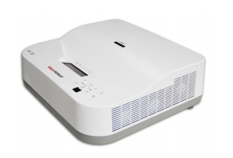
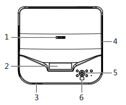
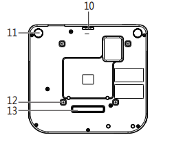
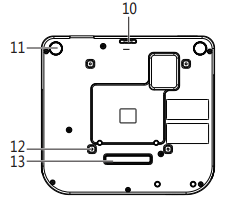

APPOTRONICS
1. 机箱¶
简要介绍APPOTRONICS超短焦激光投影仪的机箱外观和功能设置。
APPOTRONICS超短焦激光投影仪的机箱是一个白色立方箱体，主要由接口与按钮组成。

1.1. 外观¶
介绍投影仪的外观。

 

调焦圈
投射镜头
扬声器
通风孔(排热空气)
控制面板
红外遥控传感器
通风孔(进风口)
Kensington 防盗锁插槽
AC 电源线插口
防落固定孔
后调节支脚
吊顶安装孔(M4x16 螺丝孔)
前支撑脚
RJ45 网线插口
USB 输入插口(工程调试接口)
S- 视频输入插口
电脑(VGA)输出插口
AV 输入插口 (视频 / 音频左 / 音频右)
电脑(VGA)输入插口
MIC/ 电脑音频输入 / 音频输出插口
HDMI2 输入插口
RS232 控制端口
HDMI1 输入插口
1.2. 控制单元¶
介绍投影仪的控制单元。
调焦圈:调节投影图像的聚焦清晰度。
梯形失真校正 / 箭头键:手动校正因投影角度而产生的扭曲图像。当屏显用户菜单时，可选择 所需的菜单
项。
节能键:手动选择节能模式打开或关闭
音量大小 / 箭头键(< 向左、> 向右): 按“<””>”可在用户菜单左右选择项目; 按“<””>”可对音 量进行设置。
菜单键:打开屏显菜单，退出并保存菜单设置。
确认键:选择 / 确认当前数值或选择项目。
自动键:信号源重新锁定。
电源键(开机、关机): 按一下开机，在开机状态下连续按两下关机。
信号源:切换选择不同信号源。
指示灯:显示投影机的状态。 当指示灯亮绿灯闪烁时，表示投影机处于异常保护状态。
1.3. 输入接口¶
详细介绍投影仪的三种输入接口:AV 输入插口、S- 视频输入插口、VGA、HDMI。
AV 输入插口:分为了3条线，分别为:音频接口(红色与白色线，组成左右声道)和视频接口(黄色)。
S-视频输入插口:S端子可以说是AV端子的改革，在信号传输方面不再将色度与亮度混合输出，而是分离进 行信号传输，所以我们又称它为“二分量视频接口”。
VGA输入接口:VGA接口又称(S-Dub)，这是源于电脑的输入接口，由于CRT显示器无法直接接受数字信号 的输入，所以显卡只能采取将模拟信号输入显示器的方式来获得画面。而VGA就是将模拟信号传输到显示器 的接口。
HDMI输入接口:HDMI接口不但可以提供全数字的视频信号，而且还可以同时传输音频。